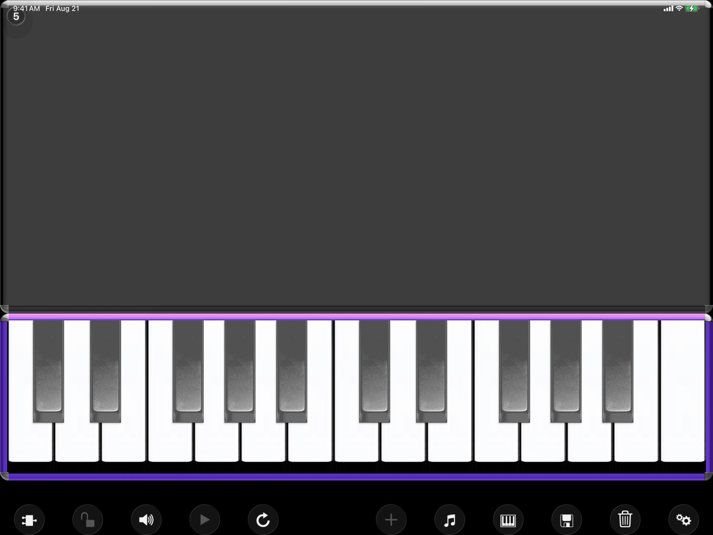
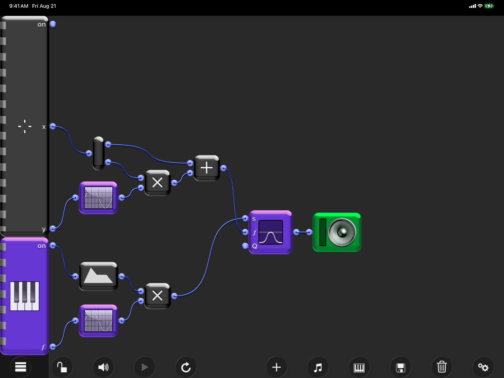
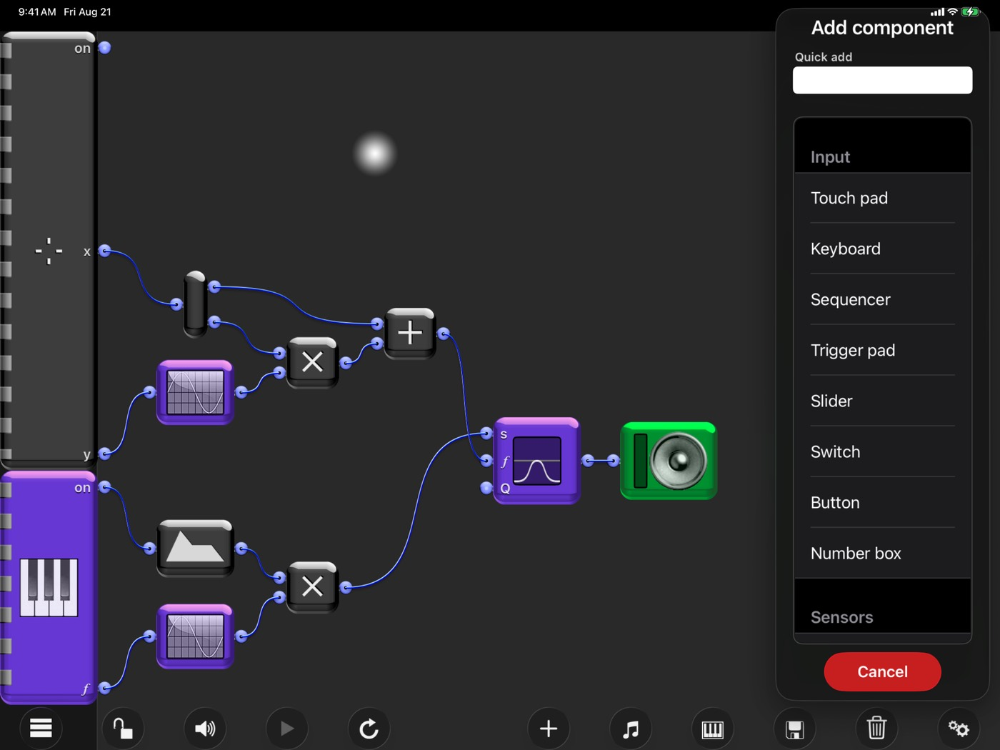
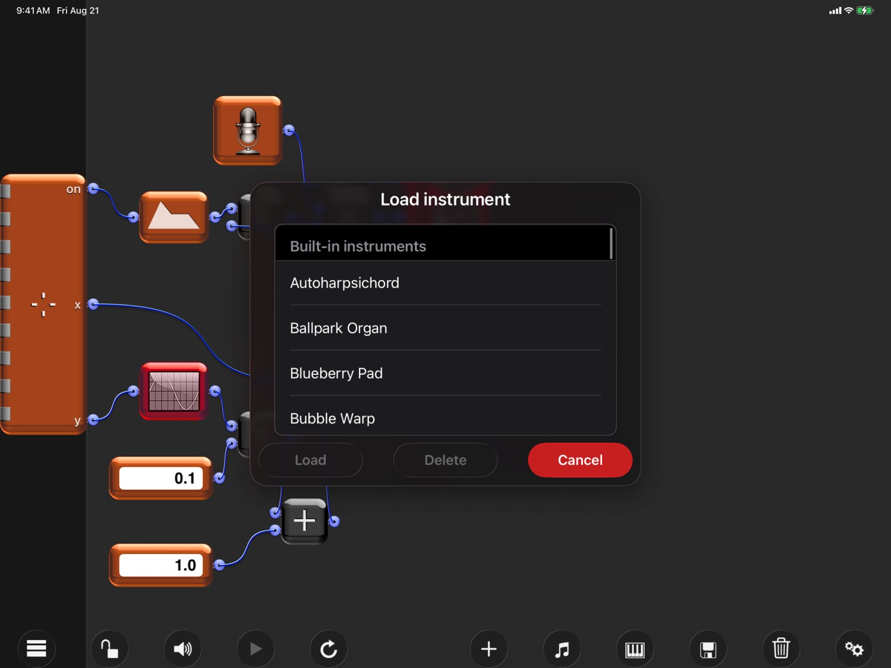

About
Wire together touch pads, keyboards, oscillators, sensors, sliders, switches and speakers to build a synthesizer exactly the way you want it — or start from one of thirty built-in instruments, from ballpark organs to spaced-out synth pads, and rewire until you get the sound you want.
Every component is polyphonic, so touch pads and keyboards play up to five fingers at once. Everything runs on your own device: no account, no network, no subscription.




Manual
The full Waveboard manual — every component, the wiring model, and the song recorder — is here.
Download the manual (PDF)Support
Found a bug, want a component that doesn’t exist yet, or need a hand with a patch? Get in touch and I’ll get back to you.
Contact supportPrivacy
Waveboard collects no data at all — no accounts, no analytics, no tracking, and no third-party SDKs. Read the full privacy policy.